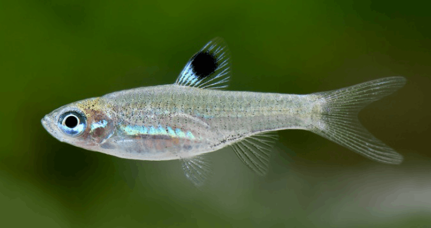
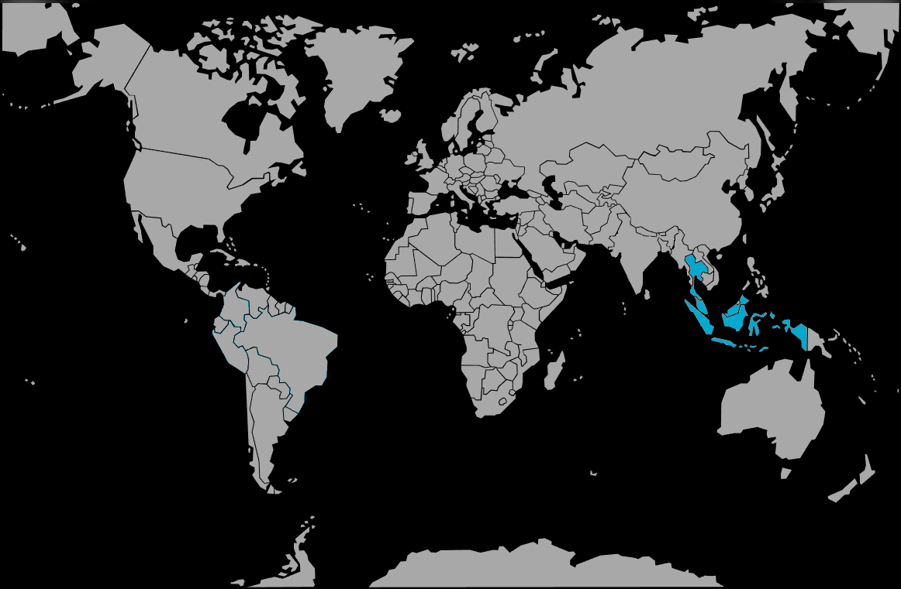

Systématique
- Ordre : Cypriniformes
- Famille : Danionidae
- Genre : Brevibora
- Espèce : B. dorsiocellata

Brevibora dorsiocellata, communément appelé Rasbora ocellé ou Rasbora à tache dorsale, est un petit cyprinidé originaire d'Asie du Sud-Est. Longtemps classé dans le genre Rasbora, il a été déplacé dans le genre Brevibora en 2010 suite à des révisions taxonomiques.
Il mesure adulte entre 3 et 4 cm, parfois jusqu'à 6 cm pour les femelles très âgées, mais reste généralement petit en aquarium. Son corps est allongé, argenté, parfois avec des reflets verdâtres.
Sa caractéristique distinctive la plus évidente est la présence d'une tache noire ronde (ocelle) sur la nageoire dorsale, soulignée de blanc crémeux ou de reflets néon, qui lui donne l'apparence d'un œil. Cette marque sert probablement de leurre ou de signal de regroupement dans les eaux sombres de son habitat naturel.
C'est un poisson de banc grégaire, vif et très pacifique. Il doit être maintenu en groupe d'au moins 8 à 10 individus. En groupe suffisant, ils nagent de manière coordonnée, souvent dans la zone médiane et supérieure de l'aquarium.
Bien que petit, c'est un nageur actif qui apprécie une certaine longueur de façade. Il convient parfaitement aux aquariums communautaires asiatiques avec d'autres espèces calmes (Gouramis, Kuhlis, autres Rasboras).
Mode : ovipare (diffuseur d'œufs).
Comme la plupart des Danionidae, c'est un diffuseur d'œufs qui ne prodigue aucun soin parental. Les œufs sont dispersés parmi les plantes fines.
La reproduction est continue : les femelles pondent régulièrement de petites quantités d'œufs. Cependant, les parents sont de grands consommateurs de leurs propres œufs. Pour obtenir des alevins, un bac de reproduction spécifique avec une grille de protection au fond est nécessaire.
Dimorphisme sexuel : Les femelles adultes sont visiblement plus rondes et souvent légèrement plus grandes que les mâles, qui restent plus sveltes.
Espérance de vie : Environ 3 à 5 ans.
Il est originaire de la péninsule malaise et des grandes îles de la Sonde (Sumatra et Bornéo).
Il habite principalement les ruisseaux forestiers et les marais tourbeux d'eau noire ("blackwater"). L'eau y est acide, très douce et teintée de brun par les acides humiques libérés par la matière organique en décomposition. Il fréquente les zones calmes proches des rives végétalisées.
Répartition

Origine naturelle :
- Asie du Sud-Est.
- Malaisie (Péninsule).
- Indonésie (Sumatra, Bornéo).
- Thaïlande (Sud).
Paramètres de maintenance
Température : 23 à 26 °C.
pH : 5,0 à 7,5 (tolérant, mais préfère l'eau acide).
GH : 2 à 10 °dGH (eau douce).
Volume conseillé : Minimum 50 à 60 L. Bien que petit, c'est un nageur actif qui a besoin d'au moins 60-80 cm de façade pour s'exprimer.
Régime alimentaire
Régime : carnivore / insectivore (micro-prédateur).
Dans la nature, il se nourrit de petits insectes tombés à l'eau, de larves et de zooplancton.
En aquarium, il accepte toutes les nourritures usuelles de petite taille : paillettes, granulés, daphnies, artémias, vers de vase (hachés si nécessaire).